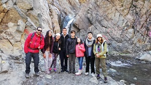

Proyecto Aurora Social
Life Skills + Objetivos de Desarrollo Sostenible para jóvenes de Enseñanza Media

El Sistema Educativo chileno ha avanzado en distintos aspectos durante los últimos años. El aumento de cobertura y la obligatoriedad de la Enseñanza Media han sido algunos avances que el país ha tenido en esta materia. Sin embargo, aún queda el gran desafío de la brecha de calidad que existe entre los centros educativos, siendo los establecimientos del sistema público que reciben a niños, niñas y adolescentes más vulnerables de nuestro país los que están están muy por debajo de los niveles mínimos esperados.
Además, el actual modelo educativo nacional mantiene prácticas desactualizadas con relación al contexto de las nuevas generaciones y desplaza las diferencias válidas que pueden existir entre uno u otro estudiante en términos de habilidades y aspiraciones personales.
En este contexto, una parte importante de los jóvenes que egresan de la Enseñanza Media evidencian una mirada individualista del mundo actual y que para enfrentar las situaciones de la vida adulta, requieren desarrollar habilidades blandas tales como liderazgo, trabajo en equipo, comunicación efectiva, tolerancia a la frustración, entre otras. Siendo necesario también el desarrollo individual de una visión crítica y consciente entorno a las problemáticas que aquejan tanto al planeta como al país desde el punto de vista social, económico y ambiental.

Como Fundación para el Desarrollo Social (FUDESO) creemos que es importante trabajar con los jóvenes en estas materias, para que desarrollen sus habilidades sociales y personales que les facilite un desarrollo individual en su vida adulta, y formen una visión crítica y consciente sobre sus propias capacidades y el entorno que los rodea.
Para esto hemos desarrollado el proyecto llamado Aurora Social, el cual se centra en los Objetivos de Desarrollo Sostenible (ODS) de laAgenda 2030 y el desarrollo de habilidades blandas para jóvenes de Enseñanza Media.
El objetivo general de Aurora Social es desarrollar habilidades blandas y concientizar acerca de las problemáticas globales y locales desde el punto de vista ambiental, social y económico, en jóvenes de enseñanza media.
Para esto trabajamos los siguientes aspectos:
- Desarrollar habilidades blandas a través de actividades dinámicas y cotidianas.
- Fomentar la importancia de las habilidades blandas para enfrentar la vida adulta.
- Fomentar el entendimiento, importancia y propósito de los Objetivos de Desarrollo Sostenible de la Agenda 2030 de la ONU.
- Generar conciencia acerca de las problemáticas globales y locales en términos ambientales, sociales y económicos.
En este proyecto participan jóvenes de enseñanza media de la ciudad de Santiago, que a través de diversas actividades prácticas y cotidianas desarrollarán habilidades blandas y entenderán su importancia en la vida adulta, además de conocer y comprender la relevancia y propósito de los ODS, lo cual permitirá concientizarlos sobre las problemáticas actuales que enfrenta tanto el planeta como el país en términos sociales, ambientales y económicos. Durante el año 2018, nuestro proyecto se ejecuta en entre los meses de Abril y Julio en la comuna de Lo Prado en las dependencias del Castillo Ecológico (ex Mundo Mágico).
Con Aurora Social también buscamos beneficiar a la comunidad educativa y las familias en la cual se encuentran inmersos los jóvenes que participan de los talleres, ya que podrán contar con con estudiantes más conscientes de su entorno. Así, la sociedad en su conjunto contará con ciudadanos más responsables y que tomen acción con respecto a las variadas problemáticas que aquejan tanto a Chile como el mundo.